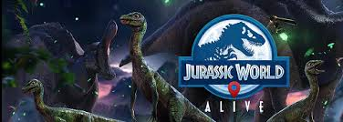

Jurassic World Alive un joc que s'aprofita de la realitat augmentada, però on tindrem dinosaures per tot arreu. ... A més d'explorar i capturar, podrem crear els nostres propis dinosaures per formar un equip per poder fer batalles PvP
Hi ha molts tipus de dinosaures
Hi ha arenas PvP
Hi ha alianzas
Els boostejos son una manera de augmentar les estadistiques dels dinosaures sense tenir que pujar-los de nivell
El maxim que pots pujar a un dinosaure amb un mateix tipus de boost es quan portes 20 boostejos que es el equivalent a pujar-se la vida i atac al 50%
Normalment quan comentes alguna cosa interesant ja sigui reportant algun error o aportant idees bones et poden llegir i fins i tot et poden contestar
Aquí us deixo l'enllaç FORUM LUDIA
Un boss és una criatura amb molta vida i depen de la raresa tindrà subdits o no, els subdits normalment es tenen que matar primer ja que fan habilitats que et perjudiquen molt a tu i al teu equip.
Cada boss té les seves propies estrategies per poder vencer-lo
com es pot veure es un joc bastant complert, pero es dificil arribar a tenir bons hibrids
No es necessari pagar diners reals per tenir tots els dinosaures, per si vols avançar ràpid al joc tindràs que pagar diners